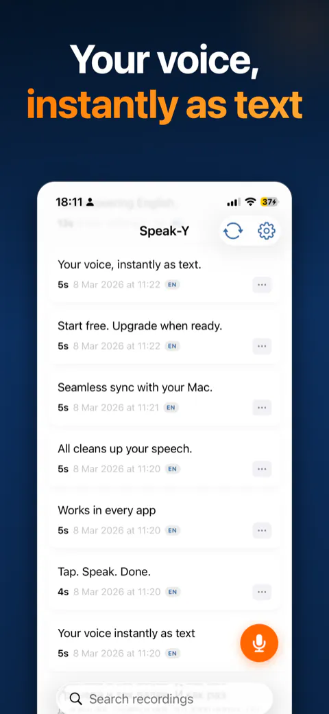
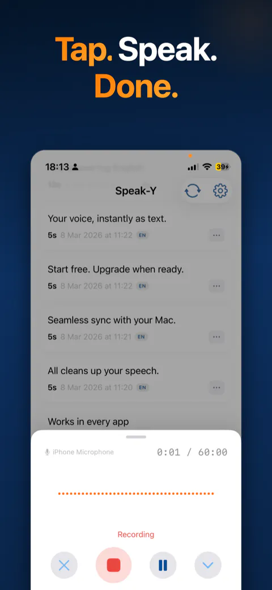
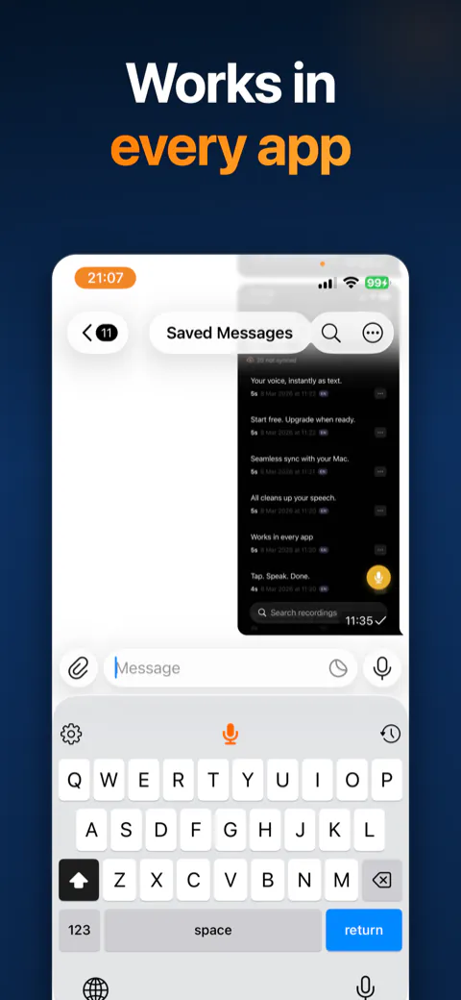
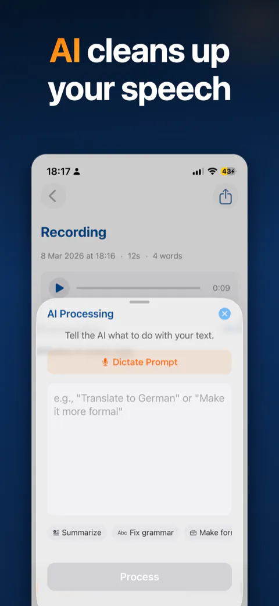
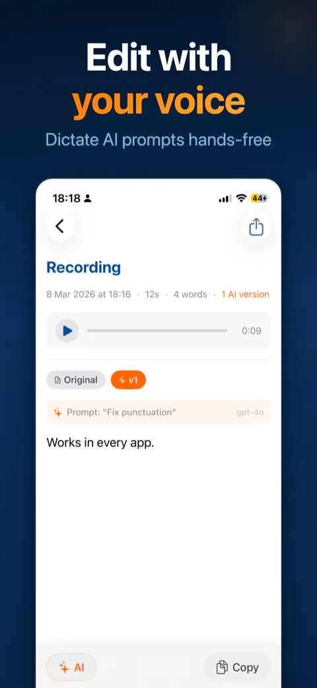

Speak-Y
Stop typing. Just say it.





Press a global hotkey, talk, and the text appears exactly where your cursor is — in Cursor, Slack, the terminal, your notes, anywhere. No app switching, no clipboard. The point isn't typing speed, it's cognitive load: typing makes your brain formulate, transcribe, type and proofread at once; speaking cuts that to two. 68% of the people I surveyed named formulating thoughts — not typing — as their real bottleneck.
What the product does
- System-wide hotkey
- Insert at cursor
- Auto-punctuation
- Voice commands
- Multilingual
- Meeting recording
- Cross-device sync
- Privacy-first
- Shipped across three platforms — macOS, Windows and iOS, live on the App Store.
- Validated before building wide — 15+ deep interviews and a 19-person survey.
- Everything else is mine too — positioning, pricing, taking subscription payments, investor materials, founder-led LinkedIn content and paid experiments.